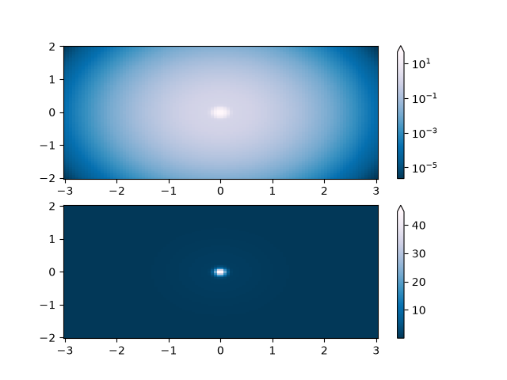
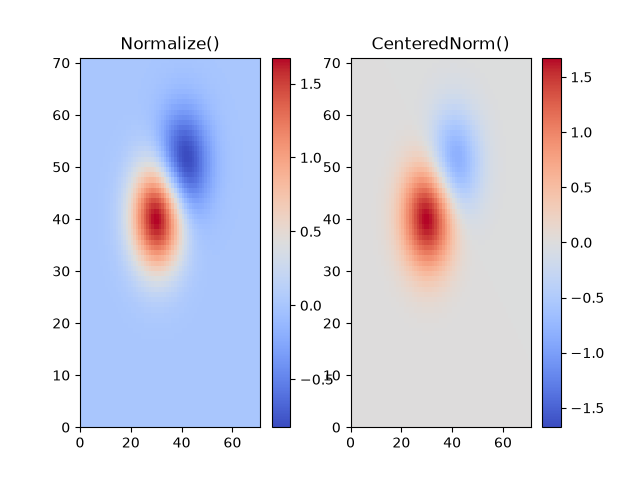
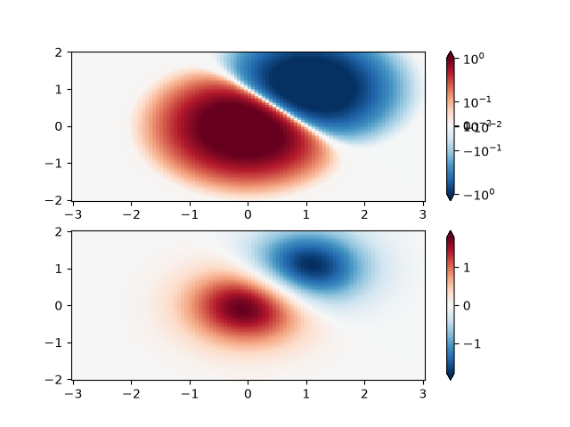
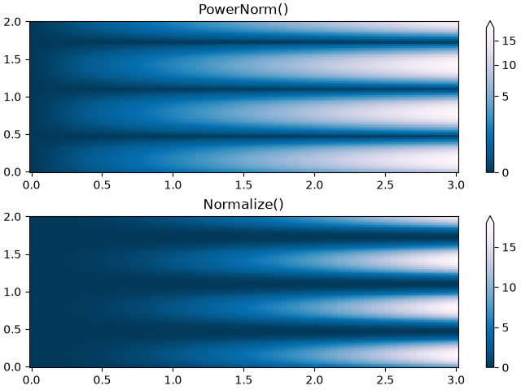
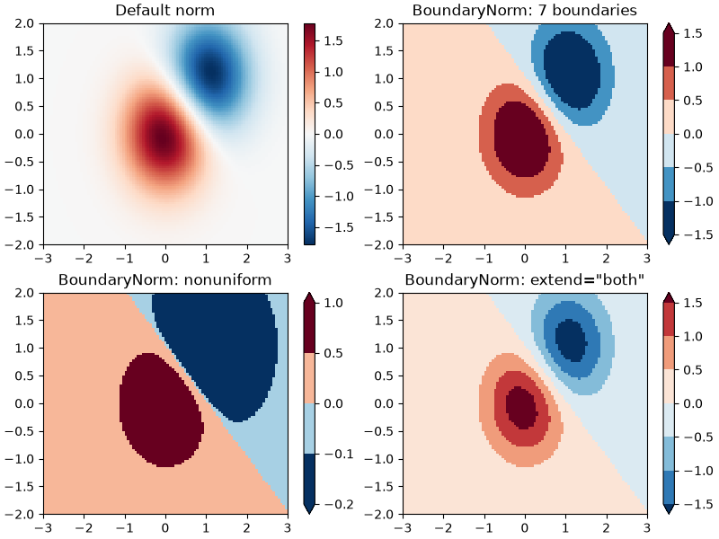
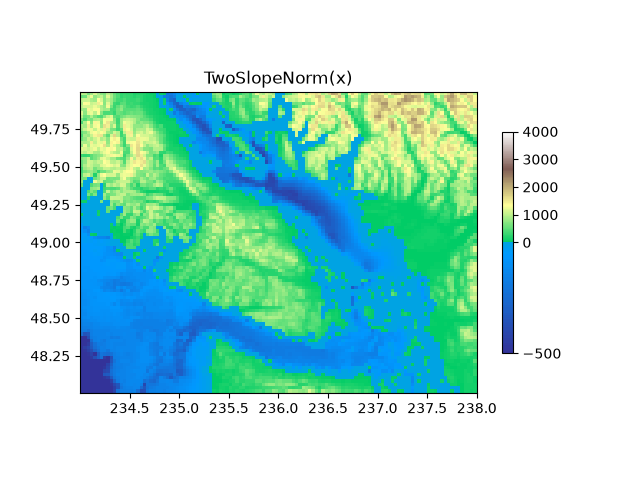
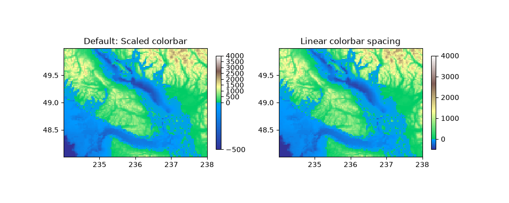
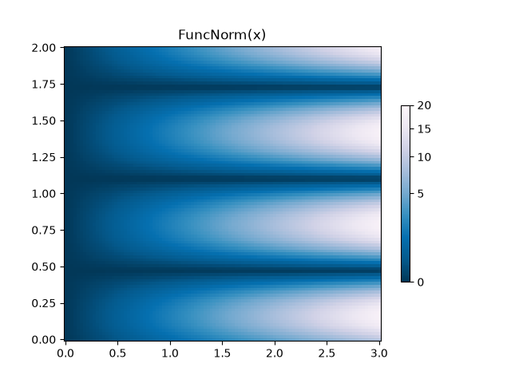
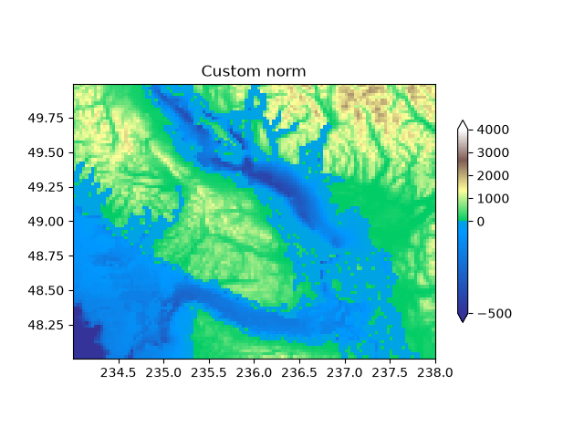

Note
Go to the end to download the full example code.
Colormap normalization#
Objects that use colormaps by default linearly map the colors in the colormap from data values vmin to vmax. For example:
will map the data in Z linearly from -1 to +1, so Z=0 will give a color at the center of the colormap RdBu_r (white in this case).
Matplotlib does this mapping in two steps, with a normalization from
the input data to [0, 1] occurring first, and then mapping onto the
indices in the colormap. Normalizations are classes defined in the
matplotlib.colors() module. The default, linear normalization
is matplotlib.colors.Normalize().
Artists that map data to color pass the arguments vmin and vmax to
construct a matplotlib.colors.Normalize() instance, then call it:
>>> import matplotlib as mpl
>>> norm = mpl.colors.Normalize(vmin=-1, vmax=1)
>>> norm(0)
0.5
However, there are sometimes cases where it is useful to map data to colormaps in a non-linear fashion.
Logarithmic#
One of the most common transformations is to plot data by taking its logarithm
(to the base-10). This transformation is useful to display changes across
disparate scales. Using colors.LogNorm normalizes the data via
\(log_{10}\). In the example below, there are two bumps, one much smaller
than the other. Using colors.LogNorm, the shape and location of each bump
can clearly be seen:
import matplotlib.pyplot as plt
import numpy as np
import matplotlib.cbook as cbook
import matplotlib.colors as colors
N = 100
X, Y = np.mgrid[-3:3:complex(0, N), -2:2:complex(0, N)]
# A low hump with a spike coming out of the top right. Needs to have
# z/colour axis on a log scale, so we see both hump and spike. A linear
# scale only shows the spike.
Z1 = np.exp(-X**2 - Y**2)
Z2 = np.exp(-(X * 10)**2 - (Y * 10)**2)
Z = Z1 + 50 * Z2
fig, ax = plt.subplots(2, 1)
pcm = ax[0].pcolor(X, Y, Z,
norm=colors.LogNorm(vmin=Z.min(), vmax=Z.max()),
cmap='PuBu_r', shading='auto')
fig.colorbar(pcm, ax=ax[0], extend='max')
pcm = ax[1].pcolor(X, Y, Z, cmap='PuBu_r', shading='auto')
fig.colorbar(pcm, ax=ax[1], extend='max')
plt.show()

Centered#
In many cases, data is symmetrical around a center, for example, positive and
negative anomalies around a center 0. In this case, we would like the center
to be mapped to 0.5 and the datapoint with the largest deviation from the
center to be mapped to 1.0, if its value is greater than the center, or 0.0
otherwise. The norm colors.CenteredNorm creates such a mapping
automatically. It is well suited to be combined with a divergent colormap
which uses different colors edges that meet in the center at an unsaturated
color.
If the center of symmetry is different from 0, it can be set with the
vcenter argument. For logarithmic scaling on both sides of the center, see
colors.SymLogNorm below; to apply a different mapping above and below the
center, use colors.TwoSlopeNorm below.
delta = 0.1
x = np.arange(-3.0, 4.001, delta)
y = np.arange(-4.0, 3.001, delta)
X, Y = np.meshgrid(x, y)
Z1 = np.exp(-X**2 - Y**2)
Z2 = np.exp(-(X - 1)**2 - (Y - 1)**2)
Z = (0.9*Z1 - 0.5*Z2) * 2
# select a divergent colormap
cmap = "coolwarm"
fig, (ax1, ax2) = plt.subplots(ncols=2)
pc = ax1.pcolormesh(Z, cmap=cmap)
fig.colorbar(pc, ax=ax1)
ax1.set_title('Normalize()')
pc = ax2.pcolormesh(Z, norm=colors.CenteredNorm(), cmap=cmap)
fig.colorbar(pc, ax=ax2)
ax2.set_title('CenteredNorm()')
plt.show()

Symmetric logarithmic#
Similarly, it sometimes happens that there is data that is positive
and negative, but we would still like a logarithmic scaling applied to
both. In this case, the negative numbers are also scaled
logarithmically, and mapped to smaller numbers; e.g., if vmin=-vmax,
then the negative numbers are mapped from 0 to 0.5 and the
positive from 0.5 to 1.
Since the logarithm of values close to zero tends toward infinity, a small range around zero needs to be mapped linearly. The parameter linthresh allows the user to specify the size of this range (-linthresh, linthresh). The size of this range in the colormap is set by linscale. When linscale == 1.0 (the default), the space used for the positive and negative halves of the linear range will be equal to one decade in the logarithmic range.
N = 100
X, Y = np.mgrid[-3:3:complex(0, N), -2:2:complex(0, N)]
Z1 = np.exp(-X**2 - Y**2)
Z2 = np.exp(-(X - 1)**2 - (Y - 1)**2)
Z = (Z1 - Z2) * 2
fig, ax = plt.subplots(2, 1)
pcm = ax[0].pcolormesh(X, Y, Z,
norm=colors.SymLogNorm(linthresh=0.03, linscale=0.03,
vmin=-1.0, vmax=1.0, base=10),
cmap='RdBu_r', shading='auto')
fig.colorbar(pcm, ax=ax[0], extend='both')
pcm = ax[1].pcolormesh(X, Y, Z, cmap='RdBu_r', vmin=-np.max(Z), shading='auto')
fig.colorbar(pcm, ax=ax[1], extend='both')
plt.show()

Power-law#
Sometimes it is useful to remap the colors onto a power-law
relationship (i.e. \(y=x^{\gamma}\), where \(\gamma\) is the
power). For this we use the colors.PowerNorm. It takes as an
argument gamma (gamma == 1.0 will just yield the default linear
normalization):
Note
There should probably be a good reason for plotting the data using this type of transformation. Technical viewers are used to linear and logarithmic axes and data transformations. Power laws are less common, and viewers should explicitly be made aware that they have been used.
N = 100
X, Y = np.mgrid[0:3:complex(0, N), 0:2:complex(0, N)]
Z1 = (1 + np.sin(Y * 10.)) * X**2
fig, ax = plt.subplots(2, 1, layout='constrained')
pcm = ax[0].pcolormesh(X, Y, Z1, norm=colors.PowerNorm(gamma=0.5),
cmap='PuBu_r', shading='auto')
fig.colorbar(pcm, ax=ax[0], extend='max')
ax[0].set_title('PowerNorm()')
pcm = ax[1].pcolormesh(X, Y, Z1, cmap='PuBu_r', shading='auto')
fig.colorbar(pcm, ax=ax[1], extend='max')
ax[1].set_title('Normalize()')
plt.show()

Discrete bounds#
Another normalization that comes with Matplotlib is colors.BoundaryNorm.
In addition to vmin and vmax, this takes as arguments boundaries between
which data is to be mapped. The colors are then linearly distributed between
these "bounds". It can also take an extend argument to add upper and/or
lower out-of-bounds values to the range over which the colors are
distributed. For instance:
Note: Unlike the other norms, this norm returns values from 0 to ncolors-1.
N = 100
X, Y = np.meshgrid(np.linspace(-3, 3, N), np.linspace(-2, 2, N))
Z1 = np.exp(-X**2 - Y**2)
Z2 = np.exp(-(X - 1)**2 - (Y - 1)**2)
Z = ((Z1 - Z2) * 2)[:-1, :-1]
fig, ax = plt.subplots(2, 2, figsize=(8, 6), layout='constrained')
ax = ax.flatten()
# Default norm:
pcm = ax[0].pcolormesh(X, Y, Z, cmap='RdBu_r')
fig.colorbar(pcm, ax=ax[0], orientation='vertical')
ax[0].set_title('Default norm')
# Even bounds give a contour-like effect:
bounds = np.linspace(-1.5, 1.5, 7)
norm = colors.BoundaryNorm(boundaries=bounds, ncolors=256)
pcm = ax[1].pcolormesh(X, Y, Z, norm=norm, cmap='RdBu_r')
fig.colorbar(pcm, ax=ax[1], extend='both', orientation='vertical')
ax[1].set_title('BoundaryNorm: 7 boundaries')
# Bounds may be unevenly spaced:
bounds = np.array([-0.2, -0.1, 0, 0.5, 1])
norm = colors.BoundaryNorm(boundaries=bounds, ncolors=256)
pcm = ax[2].pcolormesh(X, Y, Z, norm=norm, cmap='RdBu_r')
fig.colorbar(pcm, ax=ax[2], extend='both', orientation='vertical')
ax[2].set_title('BoundaryNorm: nonuniform')
# With out-of-bounds colors:
bounds = np.linspace(-1.5, 1.5, 7)
norm = colors.BoundaryNorm(boundaries=bounds, ncolors=256, extend='both')
pcm = ax[3].pcolormesh(X, Y, Z, norm=norm, cmap='RdBu_r')
# The colorbar inherits the "extend" argument from BoundaryNorm.
fig.colorbar(pcm, ax=ax[3], orientation='vertical')
ax[3].set_title('BoundaryNorm: extend="both"')
plt.show()

TwoSlopeNorm: Different mapping on either side of a center#
Sometimes we want to have a different colormap on either side of a conceptual center point, and we want those two colormaps to have different linear scales. An example is a topographic map where the land and ocean have a center at zero, but land typically has a greater elevation range than the water has depth range, and they are often represented by a different colormap.
dem = cbook.get_sample_data('topobathy.npz')
topo = dem['topo']
longitude = dem['longitude']
latitude = dem['latitude']
fig, ax = plt.subplots()
# make a colormap that has land and ocean clearly delineated and of the
# same length (256 + 256)
colors_undersea = plt.colormaps["terrain"](np.linspace(0, 0.17, 256))
colors_land = plt.colormaps["terrain"](np.linspace(0.25, 1, 256))
all_colors = np.vstack((colors_undersea, colors_land))
terrain_map = colors.LinearSegmentedColormap.from_list(
'terrain_map', all_colors)
# make the norm: Note the center is offset so that the land has more
# dynamic range:
divnorm = colors.TwoSlopeNorm(vmin=-500., vcenter=0, vmax=4000)
pcm = ax.pcolormesh(longitude, latitude, topo, rasterized=True, norm=divnorm,
cmap=terrain_map, shading='auto')
# Simple geographic plot, set aspect ratio because distance between lines of
# longitude depends on latitude.
ax.set_aspect(1 / np.cos(np.deg2rad(49)))
ax.set_title('TwoSlopeNorm(x)')
cb = fig.colorbar(pcm, shrink=0.6)
cb.set_ticks([-500, 0, 1000, 2000, 3000, 4000])
plt.show()

Using a linear scale on the colormap#
By default, colorbars adopt the same axis scaling as their associated norm.
For example, for a TwoSlopeNorm, colormap segments are distributed
linearly and the colorbar ticks positions are spaced non-linearly (as above,
and the left-hand colorbar below). To make the tick spacing linear instead,
you can change the scale by calling cb.ax.set_yscale('linear'), as shown
in the right-hand colorbar below. The ticks will then be evenly spaced, the
colormap will appear compressed in the smaller of the two slope regions.
fig, (ax1, ax2) = plt.subplots(1, 2, figsize=(10, 4))
divnorm = colors.TwoSlopeNorm(vmin=-500., vcenter=0, vmax=4000)
for ax, title in zip([ax1, ax2],
['Default: Scaled colorbar', 'Linear colorbar spacing']):
pcm = ax.pcolormesh(longitude, latitude, topo, rasterized=True, norm=divnorm,
cmap=terrain_map, shading='auto')
ax.set_aspect(1 / np.cos(np.deg2rad(49)))
ax.set_title(title)
cb = fig.colorbar(pcm, ax=ax, shrink=0.6)
cb.set_ticks(np.arange(-500, 4001, 500))
# Set linear scale for the right colorbar
cb.ax.set_yscale('linear')

FuncNorm: Arbitrary function normalization#
If the above norms do not provide the normalization you want, you can use
FuncNorm to define your own. Note that this example is the same
as PowerNorm with a power of 0.5:
def _forward(x):
return np.sqrt(x)
def _inverse(x):
return x**2
N = 100
X, Y = np.mgrid[0:3:complex(0, N), 0:2:complex(0, N)]
Z1 = (1 + np.sin(Y * 10.)) * X**2
fig, ax = plt.subplots()
norm = colors.FuncNorm((_forward, _inverse), vmin=0, vmax=20)
pcm = ax.pcolormesh(X, Y, Z1, norm=norm, cmap='PuBu_r', shading='auto')
ax.set_title('FuncNorm(x)')
fig.colorbar(pcm, shrink=0.6)
plt.show()

Custom normalization: Manually implement two linear ranges#
The TwoSlopeNorm described above makes a useful example for
defining your own norm. Note for the colorbar to work, you must
define an inverse for your norm:
class MidpointNormalize(colors.Normalize):
def __init__(self, vmin=None, vmax=None, vcenter=None, clip=False):
self.vcenter = vcenter
super().__init__(vmin, vmax, clip)
def __call__(self, value, clip=None):
# I'm ignoring masked values and all kinds of edge cases to make a
# simple example...
# Note also that we must extrapolate beyond vmin/vmax
x, y = [self.vmin, self.vcenter, self.vmax], [0, 0.5, 1.]
return np.ma.masked_array(np.interp(value, x, y,
left=-np.inf, right=np.inf))
def inverse(self, value):
y, x = [self.vmin, self.vcenter, self.vmax], [0, 0.5, 1]
return np.interp(value, x, y, left=-np.inf, right=np.inf)
fig, ax = plt.subplots()
midnorm = MidpointNormalize(vmin=-500., vcenter=0, vmax=4000)
pcm = ax.pcolormesh(longitude, latitude, topo, rasterized=True, norm=midnorm,
cmap=terrain_map, shading='auto')
ax.set_aspect(1 / np.cos(np.deg2rad(49)))
ax.set_title('Custom norm')
cb = fig.colorbar(pcm, shrink=0.6, extend='both')
cb.set_ticks([-500, 0, 1000, 2000, 3000, 4000])
plt.show()

Total running time of the script: (0 minutes 7.781 seconds)